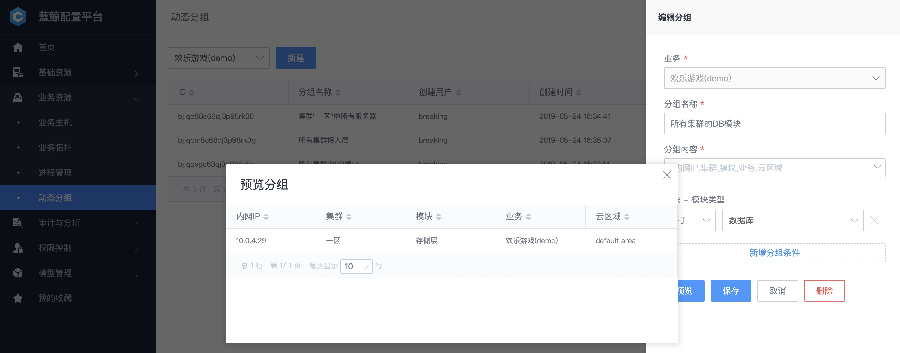
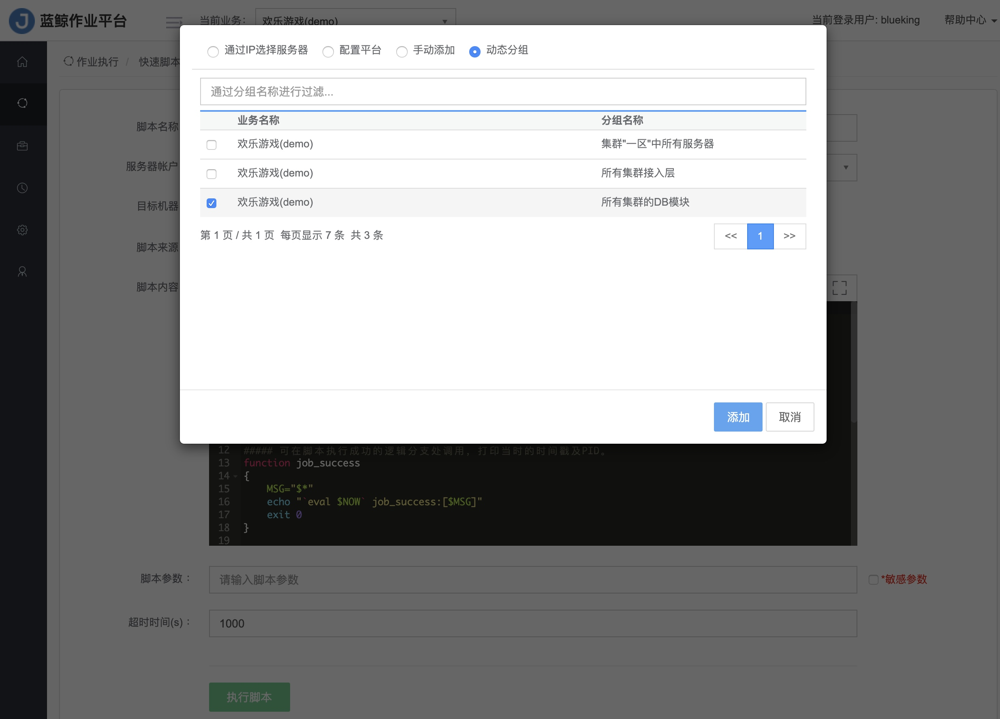

业务上线时 CMDB 如何管理主机
情景
新业务（常见的三层架构：接入层、逻辑层、存储层）上线，需要用 CMDB 管理业务上线依赖的主机资源，便于后续实现发布、变更、故障处理等场景的自动化流程。
前提条件
在配置平台中 新建完业务，并导入主机及将主机分配到业务中。
操作步骤
- 梳理业务架构
- 新建集群
- 新建模块
- 使用场景：在作业平台中查询接入层的磁盘使用率
1. 梳理业务架构
业务的架构设计最终要体现在 CMDB 的业务拓扑树上，所以我们先梳理业务的架构。
以业务“欢乐游戏( demo )"为例，其架构是常见的三层架构：接入层 -> 逻辑层 -> 存储层
为了满足全国各地用户就近接入，按照地域划分了不同的区，但架构一致。

2. 新建集群
按照上述业务架构，可将做如下对应：
- 业务中的区 <-> CMDB 中的集群
- 业务中的分层架构 <-> CMDB 中模块
在业务资源 -> 业务拓扑中，选中根节点业务，新建节点集群一区。

环境类型：一般保持
正式；测试环境设置为测试，让测试环境的发布流程模板只能选择测试集群；服务状态：一般保持
开放，在某些场景如开区准备的时候，状态可置为关闭，让发布系统无法选中；
新建完集群一区、二区后，可看到如下业务拓扑

接下来，在集群下创建模块。
3. 新建模块
选中集群节点，新建模块

模块类型：一般为
普通，当模块类型为数据库类时，选择数据库主要维护人、备份维护人：该模块维护人，一般在告警推送时会用到；区别在于电话通知时优先主要维护人，如果主要维护人未接听，自动转备份维护人，此处逻辑需要自行实现；
模块创建好了，接下来 分配主机，将 基础资源 -> 主机 中的资源按照业务架构分配至对应的模块；

4. 使用场景：在作业平台中查询接入层的磁盘使用率
通过一个简单的场景，体验 作业平台 如何消费主机实例
扩展阅读
1. 蓝鲸内置 SaaS 的 CMDB 消费场景
1.1 应用发布、变更：资源编排工具 标准运维
应用发布、变更流程包含版本在多台主机上的文件分发、命令执行等操作，如何优雅的选择这批主机，需要使用 CMDB 的查询主机实例功能。

（在 标准运维 中一次应用交付的执行历史）
在参数中使用动态IP变量，运维无需关心主机扩缩容、故障替换等场景带来的主机变更，无需担心漏更新主机或更新错主机。

1.2 故障处理：监控、故障自愈
针对业务架构中的某一层级模块（如接入层）设置一个 告警检测策略，无需关心实例的新增、删除及修改。

如何实现实时感知，背后的逻辑是通过 CMDB 的事件推送功能，实时感知实例的新增、修改、删除等动作。

在 故障自愈 中的消费场景也是如此，一个或多个模块的某一个告警，关联对应的处理动作。

1.3 平台团队对资源的管控，例如全业务 DBA、AIX SA
以 DBA 为例，需要管控所有 DB，可将运行数据库的主机所属模块的类型设置为数据库，然后通过动态分组功能查询模块类型为数据库的主机。

在 蓝鲸作业平台 中可使用该动态分组来选择 DB 主机。

2. 三级拓扑不够用，怎么办？新建多级拓扑节点
如果业务架构在大区（集群）之上还有一级（平台：如Android_Weixin、Android_QQ等）

可在业务模型中，业务与集群间新建一级或多级拓扑

新的业务拓扑如下：

注：当前版本新增层级拓扑的生效范围是所有业务，在未来的某一个版本中可调整生效范围； 蓝鲸体系在未来的某一个迭代中，将重点弱化业务和细化权限
3. Master DB 和 Slave DB 如何实现物理架构的高可用？
两者一定不要放在同一个机架或交换机下，否则机架或交换机掉电，亦或是交换机故障，Master DB 和 Slave DB 都宕机，无法正常切换，导致业务无法对外提供服务。
操作方法：[模型管理] -> [模型] -> [主机] -> [模型字段]，新增存放机架 ID、网络设备 ID。
此外，配置主机与机架或上联交换机的关联可使用模型关联，确保数据的唯一性可设置唯一校验，另外字段分组可调整 CI 属性的呈现方式。